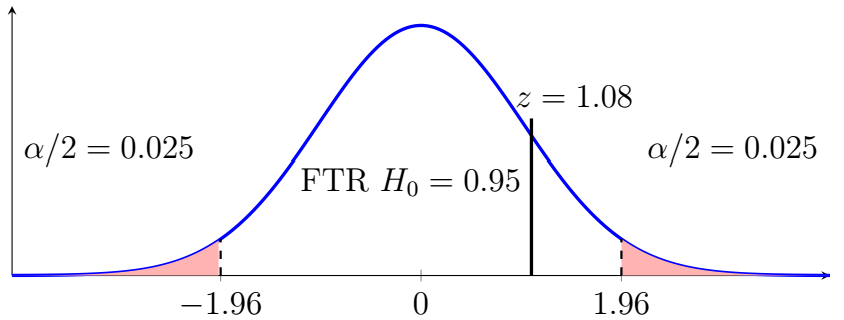

Chapter 10: Advanced Hypothesis Testing
Section 10.4: Difference of Proportions
Sometimes the parameter of interest is the difference between two population proportions.
The Parameter of Interest
Difference of Two Proportions
Let
\[p_1=\text{population proportion for Group 1}\]and
\[p_2=\text{population proportion for Group 2}.\]The parameter of interest is
\[p_1-p_2.\]The sample estimate is
\[\hat{p}_1-\hat{p}_2.\]Confidence Interval for the Difference of Two Proportions
Confidence Interval for \(p_1-p_2\)
A \(100(1-\alpha)\%\) confidence interval for \(p_1-p_2\) is
\[(\hat{p}_1-\hat{p}_2) \pm z_{\alpha/2}\sqrt{\frac{\hat{p}_1\hat{q}_1}{n_1}+\frac{\hat{p}_2\hat{q}_2}{n_2}}\]where \(\hat{q}_1=1-\hat{p}_1\), \(\hat{q}_2=1-\hat{p}_2\), and \(\hat{q}=1-\hat{p}\).
Notice that the confidence interval uses the sample proportions \(\hat{p}_1\) and \(\hat{p}_2\) in the margin of error. The hypothesis test uses a pooled proportion.
Example 1
A company wants to determine whether the proportion of customers who purchase a product differs between two stores.
At Store 1, \(84\) of \(200\) customers make a purchase.
At Store 2, \(66\) of \(180\) customers make a purchase.
Determine the confidence interval for the difference of proportions at \(\alpha=0.05\).
Solution
The sample proportions are
\[\hat{p}_1=\frac{84}{200}=0.42,\qquad\hat{p}_2=\frac{66}{180}\approx0.3667.\]Therefore,
\[\hat{q}_1=0.58,\qquad\hat{q}_2\approx0.6333.\]For a \(95\%\) confidence interval, \(\alpha=0.05\), so
\[z_{\alpha/2}=z_{0.025}=1.96.\]The difference between the sample proportions is
\[\hat{p}_1-\hat{p}_2=0.42-0.3667\approx0.0533.\]The margin of error is
\[E=z_{\alpha/2}\sqrt{\frac{\hat{p}_1\hat{q}_1}{n_1}+\frac{\hat{p}_2\hat{q}_2}{n_2}}\] \[=1.96\sqrt{\frac{(0.42)(0.58)}{200}+\frac{(0.3667)(0.6333)}{180}}\approx0.0982.\]Therefore, the confidence interval is \(0.0533\pm0.0982\) or \((-0.0449,\;0.1515)\). More formally, 95% of all similarly constructed confidence intervals will contain the true but unknown difference of proportions.
Hypothesis Test for Two Proportions
Hypotheses and Test Statistic
A common null hypothesis is
\[H_0:p_1-p_2=0\text{, or }H_0:p_1=p_2.\]The alternative hypothesis would be
\[H_1:p_1-p_2\neq 0\text{, or }H_1:p_1\neq p_2.\]One-tailed hypotheses are also possible:
\[H_0:p_1-p_2\leq 0\text{, or }H_0:p_1\leq p_2,\]versus
\[H_1:p_1-p_2>0\text{, or }H_1:p_1>p_2,\]and
\[H_0:p_1-p_2\geq 0\text{, or }H_0:p_1\geq p_2,\]versus
\[H_1:p_1-p_2<0\text{, or }H_1:p_1<p_2.\]For the hypothesis test, the margin of error uses the pooled proportion. The pooled sample proportion is
\[\hat{p}=\frac{x_1+x_2}{n_1+n_2},\qquad \hat{q}=1-\hat{p}\]where \(x_1\) and \(x_2\) are the numbers of successes in the two samples.
The test statistic is
\[z=\frac{(\hat{p}_1-\hat{p}_2)-0}{\sqrt{\frac{\hat{p}\hat{q}}{n_1}+\frac{\hat{p}\hat{q}}{n_2}}}\]When \(H_0:p_1=p_2\) is assumed true, both samples are treated as estimates of the same population proportion. The pooled proportion combines the two samples to estimate that common proportion.
Example 2
A company wants to determine whether the proportion of customers who purchase a product differs between two stores.
At Store 1, \(84\) of \(200\) customers make a purchase.
At Store 2, \(66\) of \(180\) customers make a purchase.
Test whether the purchase proportions differ at \(\alpha=0.05\).
Solution
- Claim – The stores have similar sales results.
- Complement of the claim – Sales results differ by store.
- Hypotheses – \(H_0:p_1=p_2\), \(H_1:p_1\neq p_2\).
- Significance level – \(\alpha=0.05\).
- Select the test statistic – For proportions we use \(z\).
- Compute the test statistic. \[\hat{p}_1=\frac{84}{200}=0.42\] \[\hat{p}_2=\frac{66}{180}\approx0.3667\] \[\hat{p}=\frac{x_1+x_2}{n_1+n_2}=\frac{84+66}{200+180}=\frac{150}{380}\approx0.3947.\] \[\hat{q}_1=0.58,\quad\hat{q}_2\approx0.6333,\quad\hat{q}=0.6053\] \[z=\frac{0.42-0.3667}{\sqrt{(0.3947)(0.6053)\left(\frac{1}{200}+\frac{1}{180}\right)}}\approx1.06.\]
- Determine the critical values – For a two-tailed test at \(\alpha=0.05\), \(z_c=\pm1.96\).

Two-tailed test: the test statistic z ≈ 1.06 falls in the non-rejection region. - Decision – Since \(1.06<1.96\), we fail to reject \(H_0\) and can make no conclusion on \(H_1\). We can see this graphically as \(z\) falls outside the critical region.
- Conclusion – There is insufficient evidence at the 5% significance level to conclude that the population purchase proportions differ between the two stores.
If we use the \(p\)-value method we find \(p=2(1-0.8554)\approx0.29>0.05\), resulting in the same conclusion.
Confidence Intervals and Hypothesis Tests
The Relationship Between Intervals and Tests
Confidence intervals and hypothesis tests are closely related.
For a two-sided hypothesis test at significance level \(\alpha\), a \(100(1-\alpha)\%\) confidence interval can be used to make the corresponding decision assuming the same statistical procedure and assumptions are used.
For example, when \(\alpha=0.05\), use a \(95\%\) confidence interval.
If the null hypothesis is \(H_0:\mu_1-\mu_2=0\), then
\[0\text{ outside the confidence interval}\quad\Longrightarrow\quad \text{Reject }H_0\]and
\[0\text{ inside the confidence interval}\quad\Longrightarrow\quad\text{Fail to reject }H_0.\]If 0 is exactly on the boundary of the interval, rounding can affect the apparent decision. Use the unrounded calculations when possible.
The same principle applies to a difference of proportions.
For one-sided tests, confidence bounds have the same relationship.
Choosing the Correct Procedure
The most important question when comparing two means is whether the samples are paired or independent.
\[\text{Same subjects or natural pairs}\quad\Longrightarrow\quad\text{Matched-pairs procedure}\] \[\text{Independent observations from two groups}\quad\Longrightarrow\quad\text{Two-sample procedure}\]The procedure in this chapter assumes the two samples are independent. Paired binary data require a different procedure.
| Procedure | Data Structure | Main Conditions |
|---|---|---|
| Matched-pairs \(t\) | Paired quantitative observations | Differences are approximately normal for small \(n\); no severe outliers |
| Two-sample \(t\) | Two independent quantitative samples | Independent observations; approximate normality for small samples; no severe outliers |
| Two-proportion \(z\) | Two independent binary samples | Random/appropriate samples, independence, sufficiently large expected successes and failures |
Summary of Procedures
| Parameter | Confidence Interval | Hypothesis Test |
|---|---|---|
| Matched means | \(\displaystyle \bar{d}\pm t^*\frac{s_d}{\sqrt{n}}\) | \(\displaystyle t=\frac{\bar{d}-d_0}{s_d/\sqrt{n}}\) |
| Independent means | \(\displaystyle (\bar{x}_1-\bar{x}_2)\pm t^*\,SE\) | \(\displaystyle t=\frac{(\bar{x}_1-\bar{x}_2)-d_0}{SE}\) |
| Two proportions | \(\displaystyle (\hat{p}_1-\hat{p}_2)\pm z^*\,SE\) | \(\displaystyle z=\frac{(\hat{p}_1-\hat{p}_2)-0}{SE_{\mathrm{pooled}}}\) |
For independent means
\[SE=\sqrt{\frac{s_1^2}{n_1}+\frac{s_2^2}{n_2}}\]For confidence intervals on proportions
\[SE=\sqrt{\frac{\hat{p}_1\hat{q}_1}{n_1}+\frac{\hat{p}_2\hat{q}_2}{n_2}}\]For hypothesis tests on proportions
\[SE=\sqrt{\frac{\hat{p}\hat{q}}{n_1}+\frac{\hat{p}\hat{q}}{n_2}}\]Key Ideas
- For matched pairs, calculate a difference for each pair and perform a one-sample \(t\) procedure on the differences.
- For unmatched means, treat the two samples as independent and use a two-sample \(t\) procedure.
- For two proportions, compare \(p_1\) and \(p_2\) using a two-proportion \(z\) procedure.
- Confidence intervals estimate the size of the difference.
- Hypothesis tests determine whether there is sufficient evidence of a difference.
- For a test of no difference, the null hypothesis is commonly \(H_0:\mu_1-\mu_2=0\) or \(H_0:p_1-p_2=0\).
- For a two-sided test, a confidence interval that excludes \(0\) provides evidence of a statistically significant difference.